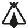
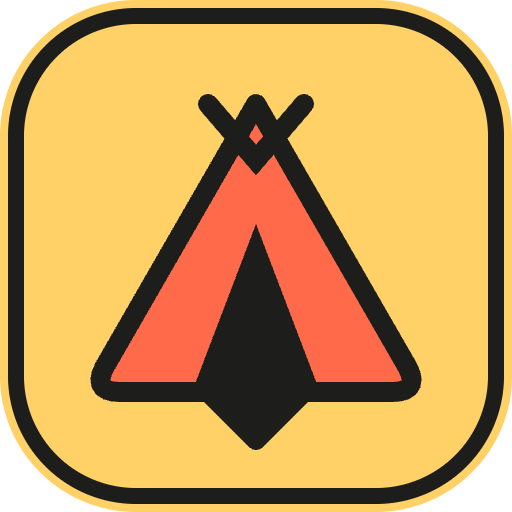
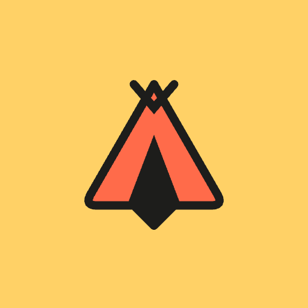
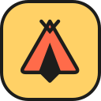

Primary
light surfaces
On dark
sticker edge · headers, lockup

Mono
currentColor in UI
Favicon
no poles, heavier line



App icon · maskable (Android safe zone) · sun tile for dark surfaces, avatars, small sizes. PNGs at 16/32/48/180/192/512. Setup notes in
export/manifest-snippet.md
.